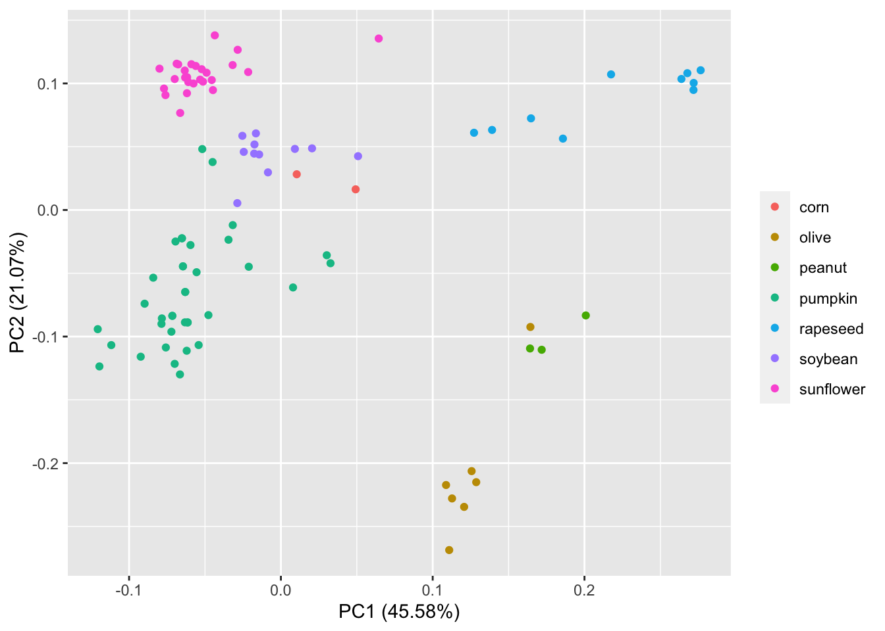
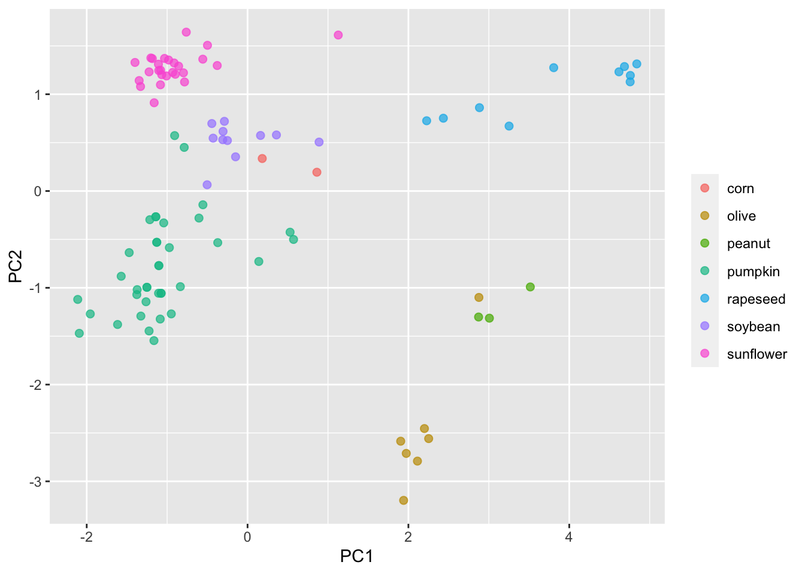

PCA and UMAP classification of vegetable oils with tidymodels & base R
Comparing the steps followed in Tidymodels and base R to do dimensionality reduction.
library(tidymodels)
library(modeldata)
library(ggfortify)
library(tidyverse)
library(embed)Motivation and data
While exploring the modeldata 📦, I found the dataset oils, which has gas chromatography information used to determine the fatty acid composition of 96 samples corresponding to 7 different vegatable oils of the market. These data is the published work of a chemistry lab. These data is something very close to what we would get in a proteomics lab, and the first thing we tend to do to explore these complex data is to do a PCA to have a simplify idea of its overall distribution in the reduced space.
EDA
data(oils)str(oils)## tibble [96 × 8] (S3: tbl_df/tbl/data.frame)
## $ palmitic : num [1:96] 9.7 11.1 11.5 10 12.2 9.8 10.5 10.5 11.5 10 ...
## $ stearic : num [1:96] 5.2 5 5.2 4.8 5 4.2 5 5 5.2 4.8 ...
## $ oleic : num [1:96] 31 32.9 35 30.4 31.1 43 31.8 31.8 35 30.4 ...
## $ linoleic : num [1:96] 52.7 49.8 47.2 53.5 50.5 39.2 51.3 51.3 47.2 53.5 ...
## $ linolenic : num [1:96] 0.4 0.3 0.2 0.3 0.3 2.4 0.4 0.4 0.2 0.3 ...
## $ eicosanoic: num [1:96] 0.4 0.4 0.4 0.4 0.4 0.4 0.4 0.4 0.4 0.4 ...
## $ eicosenoic: num [1:96] 0.1 0.1 0.1 0.1 0.1 0.5 0.1 0.1 0.1 0.1 ...
## $ class : Factor w/ 7 levels "corn","olive",..: 4 4 4 4 4 4 4 4 4 4 ...oils %>%
count(class)## # A tibble: 7 x 2
## class n
## * <fct> <int>
## 1 corn 2
## 2 olive 7
## 3 peanut 3
## 4 pumpkin 37
## 5 rapeseed 10
## 6 soybean 11
## 7 sunflower 26This looks like fun dataset to project in a reduced dimension space like PCA or UMAP!
PCA in base R
The steps to generate the components for PCA in base R would be:
pca_res <- oils %>%
dplyr::select(where(is.numeric)) %>% # select only the numeric variables
tidyr::drop_na() %>% # to drop any NA
scale() %>% # to initially normalise the variances
prcomp() # to convert numeric data to principal componentspca_res## Standard deviations (1, .., p=7):
## [1] 1.78631393 1.21432295 1.11849881 0.80775705 0.49010697 0.43543634 0.03437479
##
## Rotation (n x k) = (7 x 7):
## PC1 PC2 PC3 PC4 PC5
## palmitic -0.1724393 -0.69299469 -0.04593832 0.46972220 -0.19508286
## stearic -0.4589668 -0.25101419 -0.24289349 0.18544207 0.61204669
## oleic 0.4578722 -0.39918199 0.14986398 -0.28962122 0.08386290
## linoleic -0.4590266 0.44858975 -0.11564307 0.05114339 -0.07111895
## linolenic 0.3446082 0.27607934 0.23426894 0.80580939 -0.02884460
## eicosanoic 0.1682596 -0.01595516 -0.81991595 0.04591653 -0.46100031
## eicosenoic 0.4384013 0.14034544 -0.41942317 0.08389933 0.60157904
## PC6 PC7
## palmitic -0.4661816 0.10904667
## stearic 0.5067647 0.03928963
## oleic 0.2409267 0.67792957
## linoleic -0.2371904 0.71467174
## linolenic 0.2916300 0.12220735
## eicosanoic 0.2889776 0.03216008
## eicosenoic -0.4929535 0.01587562We can see that PC componennt for each class of oil were added in a prcomp object.
And we could plot those component with autoplot
autoplot(pca_res, data = oils, colour = "class") +
labs(color = NULL) We can see that this PCA separates olive oil far away from the other 7 types of oils. It also looks like one of the olive oils is closer to peanunt type of oil in the PCA space .
PCA in Tidymodels
Modeling is very much like cooking, and in the Tidymodels universe the language is reflects this very well 👨🍳. There are three things that we will need to do:
- Writing down a recipe 👩🍳
- Preparing that recipe 🍝
- Juicing the recipe ☕
Writing down a recipe
We write down the recipe by adding series of steps.
pca_rec <- recipe(~., data = oils) %>% # start writing the recipe with all the data
update_role(class, new_role = "id") %>% # to keep this column around but not include it in the model
step_normalize(all_predictors()) %>% # to normalise the data
step_pca(all_predictors()) # to convert numeric data to principal componentsAs we see the steps that we need to follow to write the recipe are very similar to the steps followed in base R. However, this is not all. In fact, if we explore how the recipe looks like:
pca_rec## Data Recipe
##
## Inputs:
##
## role #variables
## id 1
## predictor 7
##
## Operations:
##
## Centering and scaling for all_predictors()
## No PCA components were extracted.We can see that the design matrix with id and predictor variables was created. The recipe tells us that the No PCA components were extracted. This is because a recipe specifies what we want to do, but it doesn’t really do anything to the data yet. We need to extract those components by preparing the recipe.
Preparing that recipe
We can use the function prep for preparing to train this data recipe. Prep returns an updated recipe with the estimates.
pca_prep <- prep(pca_rec)
pca_prep## Data Recipe
##
## Inputs:
##
## role #variables
## id 1
## predictor 7
##
## Training data contained 96 data points and no missing data.
##
## Operations:
##
## Centering and scaling for palmitic, stearic, oleic, linoleic, ... [trained]
## PCA extraction with palmitic, stearic, oleic, linoleic, ... [trained]In the operations we see that the data has been [trained].
Great! But these are still not the components 🤔. We need to finalise that prepared recipe by juicing it!
Juicing the recipe
We need to apply these operation to the data; juice returns a tibble where all steps have been applied to the data.
pca_juiced <- juice(pca_prep)
pca_juiced## # A tibble: 96 x 6
## class PC1 PC2 PC3 PC4 PC5
## <fct> <dbl> <dbl> <dbl> <dbl> <dbl>
## 1 pumpkin -1.22 -0.296 -0.245 -0.158 0.0882
## 2 pumpkin -1.10 -0.771 -0.198 -0.00964 -0.0901
## 3 pumpkin -1.08 -1.06 -0.212 0.0154 0.00279
## 4 pumpkin -1.14 -0.266 -0.192 -0.177 -0.137
## 5 pumpkin -1.25 -0.995 -0.241 0.226 -0.186
## 6 pumpkin 0.572 -0.500 -0.0821 0.0652 0.286
## 7 pumpkin -1.13 -0.530 -0.202 -0.0640 -0.0592
## 8 pumpkin -1.13 -0.530 -0.202 -0.0640 -0.0592
## 9 pumpkin -1.08 -1.06 -0.212 0.0154 0.00279
## 10 pumpkin -1.14 -0.266 -0.192 -0.177 -0.137
## # … with 86 more rowsGreat! The processed data is ready to “consumed” by a plot!
pca_juiced %>%
ggplot(aes(PC1, PC2, label = class)) +
geom_point(aes(color = class), alpha = 0.7, size = 2) +
labs(color = NULL)
The initial PCA and this one generated with Tidymodels look very similar. Note that autoplot adds some information to the plot such as providing PCs percentage. So what’s the point of using Tidymodels if is a such a long series of steps compared to base R? Well, Tidymodels integrates a lot of modular packages which facilitates creating and evaluating different models.
UMAP in Tidymodels
In addition to PCA, we could plot a UMAP representation. To do that we would need a new recipe, one that includes a step specify UMAP dimension reduction technique; this step is naturally called step_umap. Once that we have this recipe, the process is the same. Recipe, prep, juice.
umap_rec <- recipe(~., data = oils) %>%
update_role(class, new_role = "id") %>%
step_normalize(all_predictors()) %>%
step_umap(all_predictors()) # this step makes a different recipe umap_prep <- prep(umap_rec)umap_juiced <- juice(umap_prep)umap_juiced %>%
ggplot(aes(umap_1, umap_2, label = class)) +
geom_point(aes(color = class), alpha = 0.7, size = 2) +
labs(color = NULL)UMAP representation of market vegatable oils
This model separates the data in the space somewhat differently to PCA. PCA and UMAP are fundamentally different in that PCA is a linear dimensionality reduction algorithm whereas UMAP is non-linear. Moreover, there are few important parameters that can impact how the UMAP representation looks like. This is nicely explained in the README of umapr package from the ropenscilabs. You can see additional arguments offered by step_umap with ?step_umap. Also note that we have trained our models with a tiny set of data (we have not done resampling) and we have not evaluated their performance.
Conclusionss
The data processing for doing unsupervised machine learning with Tidymodels are very similar to base R. Linear and non-linear dimensionality reduction algorithms separate the data in the reduced space differently. Resampling and model evaluation could help to better understand how these models perform.